História · 8º ano · 4º bimestre · Ensino Fundamental
O Mundo Partilhado
Imperialismo, neocolonialismo e resistência
Entre 1870 e 1914, um punhado de países industrializados dividiu a África e boa parte da Ásia e da Oceania. Por que fizeram isso? O que disseram para justificar? Quem resistiu? E que ideias herdadas dessa época ainda aparecem hoje em estereótipos e preconceitos?
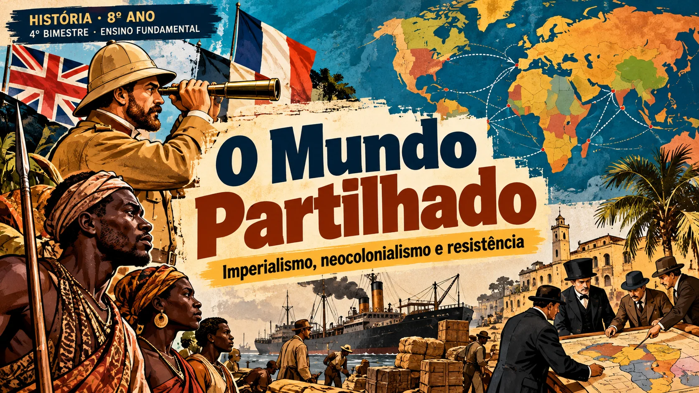
↗ Clique para abrir em nova aba ?LIVRO DIGITAL · COLÉGIO ESTADUAL RODOLFO DE OLIVEIRA · CERO · 2026
Antes de começar · 4º bimestre
Habilidades e objetivos
O que a Matriz de Habilidades Essenciais pede neste bimestre e onde cada habilidade é trabalhada no livro.
Três habilidades, três perguntas
Por quê?
Que relação existe entre o capitalismo industrial, o imperialismo e o neocolonialismo, e por que as nações europeias queriam ampliar seus domínios. ?
Com que justificativas?
Que ideias, como o darwinismo social, o racismo e a “missão civilizatória”, foram usadas para justificar a dominação da África e da Ásia. ?
DC-GO Ampliado e Matriz de Habilidades Essenciais
| DC-GO Ampliado | Matriz de Habilidades Essenciais |
|---|---|
| (GO-EF08HI23-A) Discutir as justificativas para o domínio neocolonial na África e Ásia, analisando teorias, como Darwinismo Social, Etnocentrismo, Racismo, Missão Civilizatória, relacionando esses conceitos com os casos de intolerância, presentes nos dias atuais. | Entender o contexto da expansão imperialista europeia no século XIX e a disputa por territórios na África e na Ásia e as justificativas ideológicas do domínio. |
| (GO-EF08HI24-A) Compreender o imperialismo e caracterizar o neocolonialismo como práticas relacionadas à expansão do capitalismo industrial a partir do século XIX, analisando as razões e interesses das nações europeias na exploração da África, Ásia e Oceania. | Compreender a conexão entre imperialismo, neocolonialismo e capitalismo industrial e como as nações europeias ampliaram seus domínios. |
| (GO-EF08HI27-B) Problematizar a utilização de estereótipos e preconceitos em relação aos povos africanos e indígenas, suas culturas, saberes, tradições e conhecimentos científicos, como forma de predomínio do conhecimento eurocêntrico. | Analisar o papel do eurocentrismo na construção de estereótipos e preconceitos históricos contra africanos e indígenas, identificando suas influências nos dias atuais. Compreender os conhecimentos de diferentes culturas, a fim de respeitar saberes e tradições. |
Onde cada habilidade é trabalhada
| Habilidade essencial | Capítulos | O que você vai fazer |
|---|---|---|
| Compreender a conexão entre imperialismo, neocolonialismo e capitalismo industrial | 1, 3 e 4 | Ligar a Segunda Revolução Industrial, a concentração de capitais e a busca por matérias-primas e mercados à conquista de territórios. |
| Entender o contexto da expansão e as justificativas ideológicas do domínio | 2, 3 e 4 | Analisar o darwinismo social, o racismo e a “missão civilizatória” e acompanhar a disputa por territórios na África e na Ásia. |
| Analisar o eurocentrismo e os estereótipos contra africanos e indígenas | 2 e 5 | Reconhecer como imagens e ideias criadas no século XIX ainda aparecem hoje. |
| Compreender conhecimentos de diferentes culturas para respeitar saberes e tradições | 5 | Conhecer saberes africanos e indígenas e o papel deles na história e em Goiás. |
- o que foi a Segunda Revolução Industrial e por que ela empurrou as potências para outros continentes;
- o que significam imperialismo, neocolonialismo, etnocentrismo, eurocentrismo, darwinismo social e “missão civilizatória”;
- como a África e a Ásia foram partilhadas e como os povos dominados resistiram;
- por que a ideia de “raças superiores” não tem base científica, mas deixou marcas de racismo e intolerância;
- como respeitar e valorizar os saberes de diferentes culturas, em especial africanas e indígenas.
Para começar
Quem desenhou o mapa do mundo?
Em 1880, os europeus controlavam cerca de 10% da África. Em 1900, cerca de 90%. O que aconteceu nesses vinte anos?
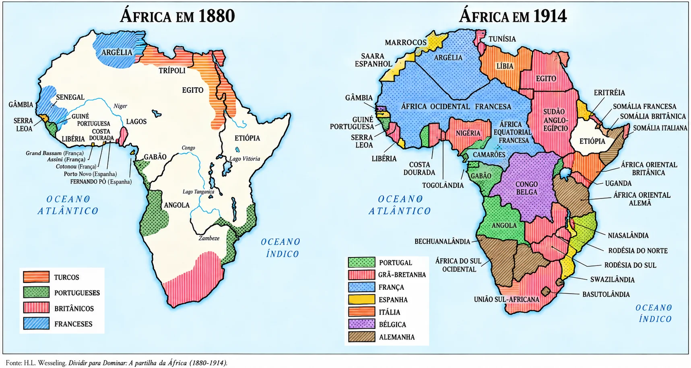
↗ África em 1880 e 1914 · Clique no mapa para abrir em nova aba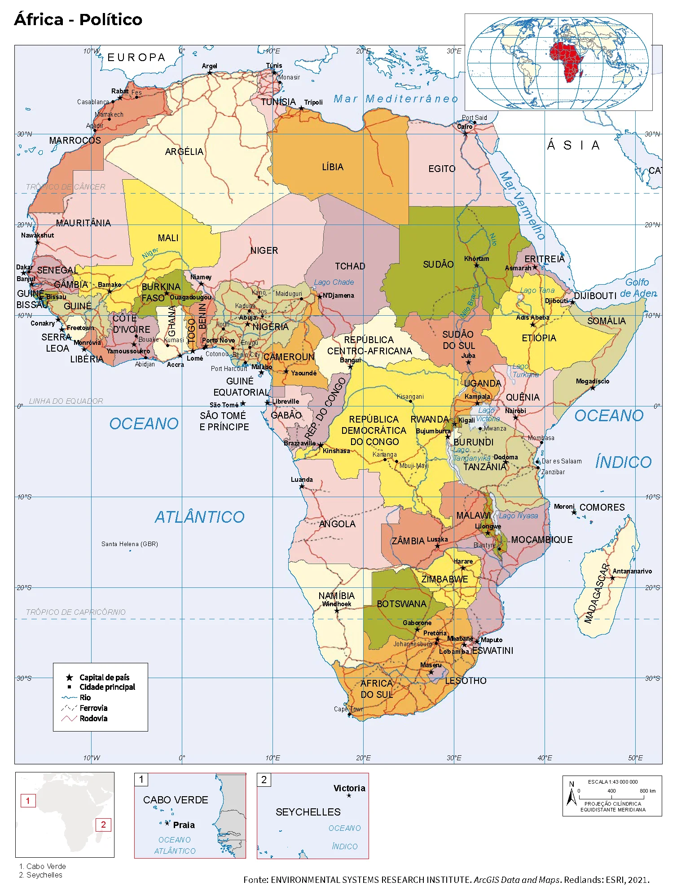
↗ África — mapa político atualOlhe para um mapa político da África de hoje e repare nas fronteiras: muitas são linhas retas, traçadas a régua. Elas não nasceram de rios, montanhas ou da história dos povos que ali viviam. Foram combinadas em salas na Europa, por quem nunca tinha pisado naquelas terras. Este livro conta como isso foi possível, o que se dizia para justificar e como os povos africanos e asiáticos reagiram.
- Por que potências industrializadas passaram a disputar territórios na África, na Ásia e na Oceania?
- Que ideias foram usadas para dizer que dominar outros povos era “natural” ou até um “dever”?
- Que estereótipos sobre africanos e indígenas nasceram nessa época e ainda circulam hoje?
- Que saberes desses povos foram deixados de lado, e por que vale a pena conhecê-los?
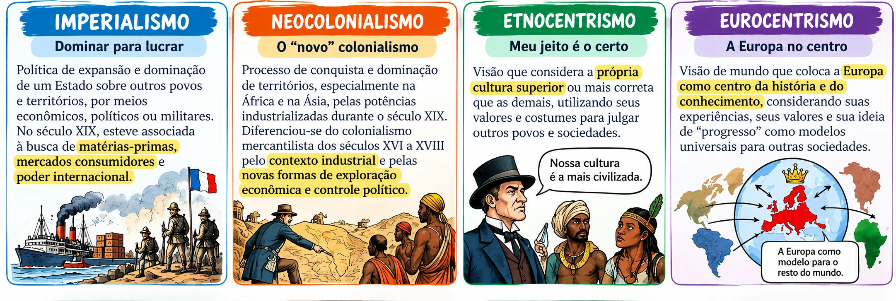
↗ Clique na imagem para abrir o mapa visual completo em nova aba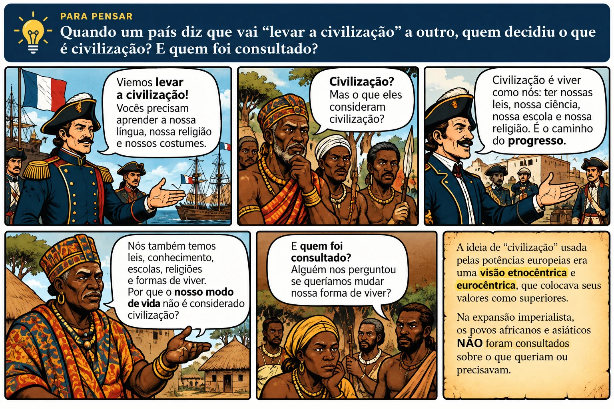
O bimestre em uma linha do tempo
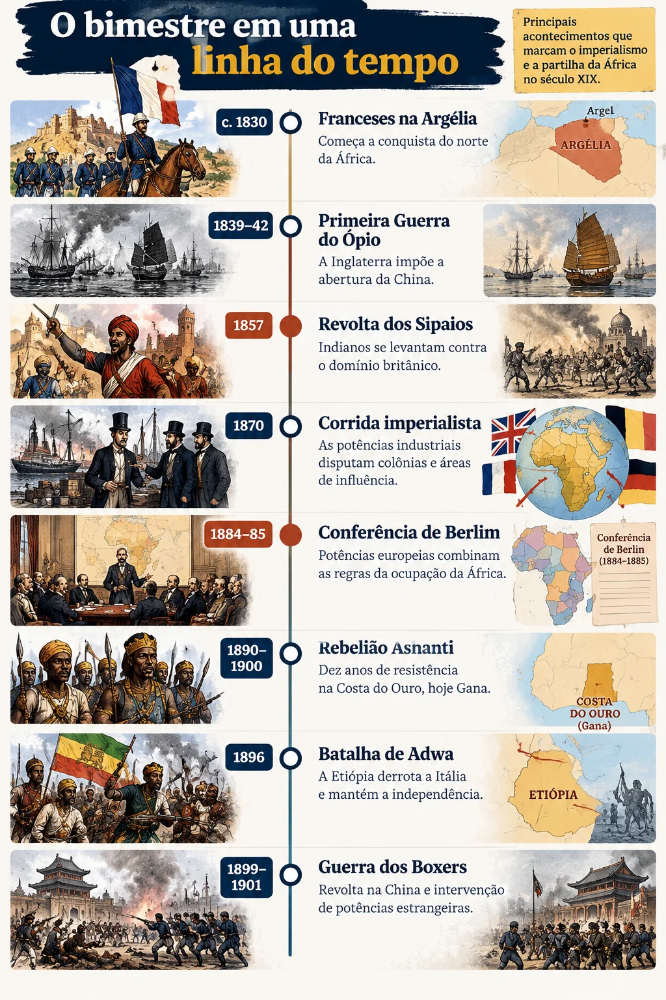
- c. 1830Franceses na ArgéliaComeça a conquista do norte da África.
- 1839–42Primeira Guerra do ÓpioA Inglaterra impõe a abertura da China.
- 1857Revolta dos SipaiosIndianos se levantam contra o domínio britânico.
- 1870Corrida imperialistaAs potências industriais disputam colônias e áreas de influência.
- 1884–85Conferência de BerlimPotências europeias combinam as regras da ocupação da África.
- 1890–1900Rebelião AshantiDez anos de resistência na Costa do Ouro, hoje Gana.
- 1896Batalha de AdwaA Etiópia derrota a Itália e mantém a independência.
- 1899–1901Guerra dos BoxersRevolta na China e intervenção de potências estrangeiras.
O que vem pela frente
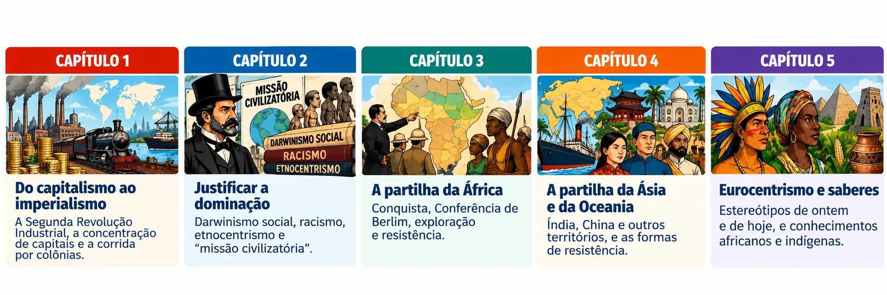
A partir de 1870 · Capitalismo industrial
Do capitalismo industrial ao imperialismo
Por que fábricas na Europa e nos Estados Unidos acabaram levando exércitos para a África e a Ásia.
Para entender a partilha do mundo é preciso começar pela fábrica. A partir de 1870, a indústria produzia mais do que os mercados da Europa conseguiam consumir, os grandes empresários acumulavam capitais que precisavam de novos investimentos e as fábricas exigiam cada vez mais matérias-primas. A solução que as potências encontraram foi buscar terras, recursos e consumidores em outros continentes. Esse movimento tem nome: imperialismo.
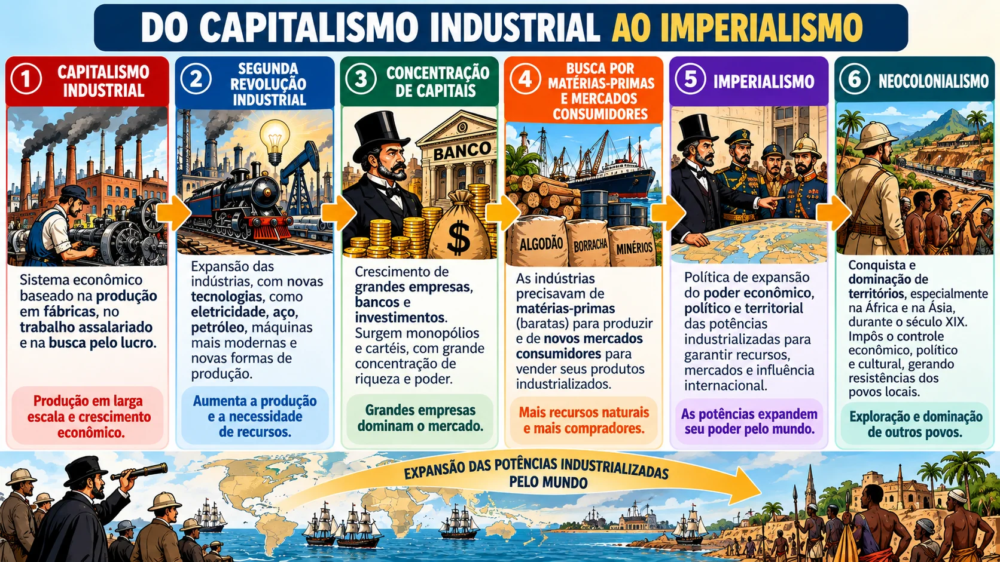
- O que mudou na indústria na segunda metade do século XIX?
- Como a concentração de capitais e a crise de 1873 aproximaram a economia da política de conquista?
- O que as potências buscavam na África, na Ásia e na Oceania?
Lembrando: a Primeira Revolução Industrial
A Revolução Industrial começou na Inglaterra, na segunda metade do século XVIII, com máquinas a vapor, fábricas, trabalho assalariado e produção voltada ao lucro. A indústria têxtil de algodão foi a primeira a se mecanizar, e o algodão usado era barato em parte porque vinha de áreas escravistas, como o sul dos Estados Unidos e o Brasil. Essa primeira fase deu à Inglaterra a posição de “oficina do mundo”, mas ela chegou a seus limites quando outros países começaram a se industrializar também.
A Segunda Revolução Industrial
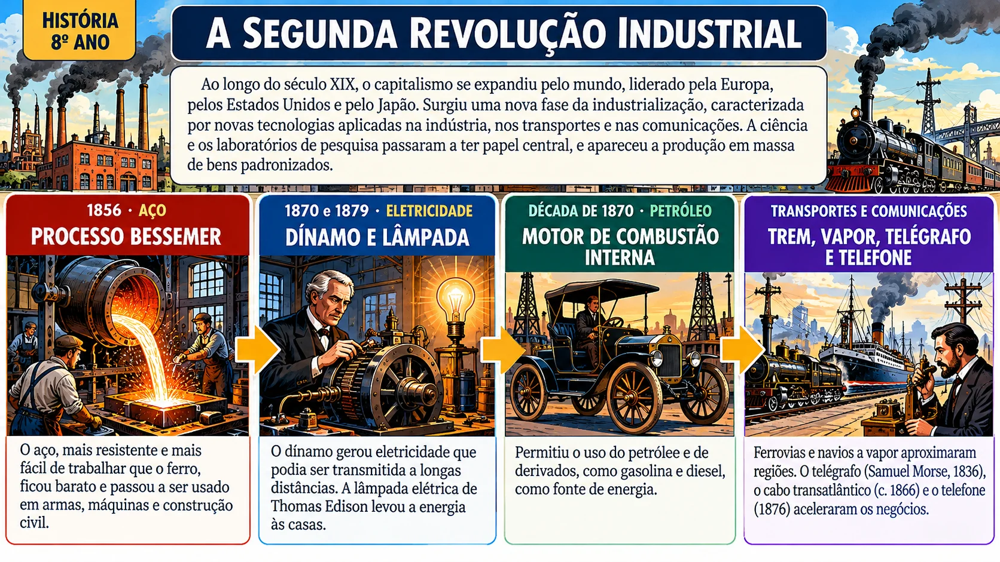
↗ Clique para ampliarAo longo do século XIX, o capitalismo se expandiu pelo mundo, liderado pela Europa, pelos Estados Unidos e pelo Japão. Surgiu uma nova fase da industrialização, caracterizada por novas tecnologias aplicadas na indústria, nos transportes e nas comunicações. A ciência e os laboratórios de pesquisa passaram a ter papel central, e apareceu a produção em massa de bens padronizados.
Processo Bessemer
O aço, mais resistente e mais fácil de trabalhar que o ferro, ficou barato e passou a ser usado em armas, máquinas e construção civil.
Dínamo e lâmpada
O dínamo gerou eletricidade que podia ser transmitida a longas distâncias. A lâmpada elétrica de Thomas Edison levou a energia às casas.
Motor de combustão interna
Permitiu o uso do petróleo e de derivados, como gasolina e diesel, como fonte de energia.
Trem, vapor, telégrafo e telefone
Ferrovias e navios a vapor aproximaram regiões. O telégrafo (Samuel Morse, 1836), o cabo transatlântico (c. 1866) e o telefone (1876) aceleraram os negócios.
Concentração de capital: poucos donos de tudo
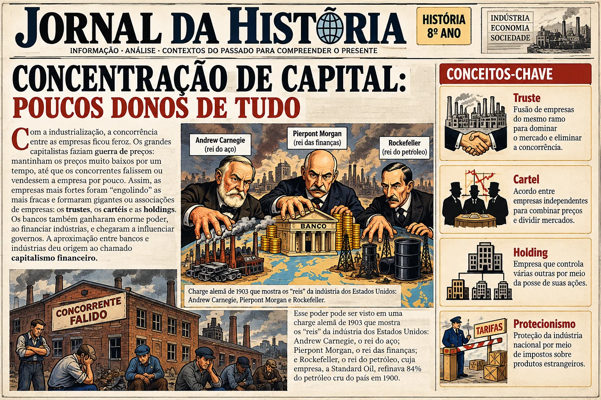
Com a industrialização, a concorrência entre as empresas ficou feroz. Os grandes capitalistas faziam guerra de preços: mantinham os preços muito baixos por um tempo, até que os concorrentes falissem ou vendessem a empresa por pouco. Assim, as empresas mais fortes foram “engolindo” as mais fracas e formaram gigantes ou associações de empresas: os trustes, os cartéis e as holdings. Os bancos também ganharam enorme poder, ao financiar indústrias, e chegaram a influenciar governos. A aproximação entre bancos e indústrias deu origem ao chamado capitalismo financeiro.
Esse poder pode ser visto em uma charge alemã de 1903 que mostra os “reis” da indústria dos Estados Unidos: Andrew Carnegie, o rei do aço; Pierpont Morgan, o rei das finanças; e Rockefeller, o rei do petróleo, cuja empresa, a Standard Oil, refinava 84% do petróleo cru do país em 1900.
Truste: fusão de empresas do mesmo ramo para dominar o mercado e eliminar a concorrência.
Cartel: acordo entre empresas independentes para combinar preços e dividir mercados.
Holding: empresa que controla várias outras por meio da posse de suas ações.
Protecionismo: proteção da indústria nacional por meio de impostos sobre produtos estrangeiros.
Crise de 1873 e corrida por mercados
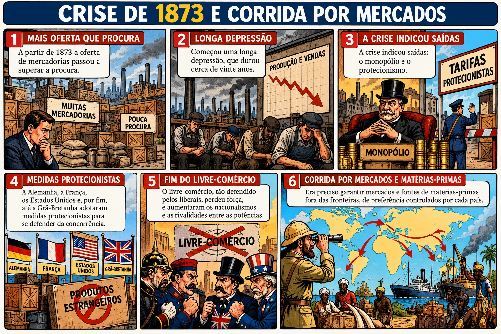
A partir de 1873 a oferta de mercadorias passou a superar a procura. Começou uma longa depressão, que durou cerca de vinte anos. A crise indicou saídas: o monopólio e o protecionismo. A Alemanha, a França, os Estados Unidos e, por fim, até a Grã-Bretanha adotaram medidas protecionistas para se defender da concorrência. O livre-comércio, tão defendido pelos liberais, perdeu força, e aumentaram os nacionalismos e as rivalidades entre as potências. Era preciso garantir mercados e fontes de matérias-primas fora das fronteiras, de preferência controlados por cada país.
O que é imperialismo e neocolonialismo?
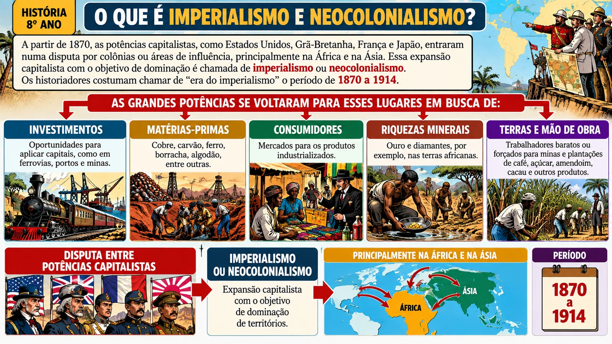
A partir de 1870, as potências capitalistas, como Estados Unidos, Grã-Bretanha, França e Japão, entraram numa disputa por colônias ou áreas de influência, principalmente na África e na Ásia. Essa expansão capitalista com o objetivo de dominação é chamada de imperialismo ou neocolonialismo. Os historiadores costumam chamar de “era do imperialismo” o período de 1870 a 1914.
As grandes potências se voltaram para esses lugares em busca de:
Os governos incentivavam a conquista e usavam essas ações para despertar o “orgulho nacional” entre os cidadãos. Como você verá no capítulo seguinte, essa expansão veio acompanhada de teorias que diziam que os europeus eram superiores aos povos que dominavam.
Alguns estudiosos usam neocolonialismo para dizer “novo colonialismo”, a fim de diferenciar a dominação do século XIX da colonização da época mercantilista, como a do Brasil colonial. Neste livro, imperialismo e neocolonialismo aparecem como a expansão capitalista do século XIX com objetivo de dominação.
| Colonização mercantilista (séculos XVI a XVIII) | Neocolonialismo (a partir de 1870) | |
|---|---|---|
| Base econômica | Mercantilismo, comércio e metais preciosos | Capitalismo industrial e financeiro |
| O que se buscava | Produtos tropicais e metais para a metrópole | Matérias-primas para a indústria, mercados consumidores e áreas de investimento |
| Quem dominava | Reinos como Portugal e Espanha | Potências industriais, como Grã-Bretanha, França, Alemanha, Bélgica, Estados Unidos e Japão |
| Formas de domínio | Colônias de exploração e povoamento | Colônias, protetorados, domínios e áreas de influência |
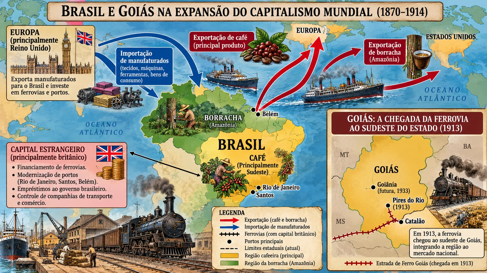
O Brasil não foi partilhado como a África, mas fez parte desse mundo. Vendia produtos primários, como café e borracha, e comprava manufaturados. Capitais ingleses financiaram ferrovias e portos no país. Em Goiás, as ferrovias só chegaram no início do século XX, quando já faziam parte desse mesmo movimento de expansão do capitalismo, que ligava o interior ao comércio internacional.
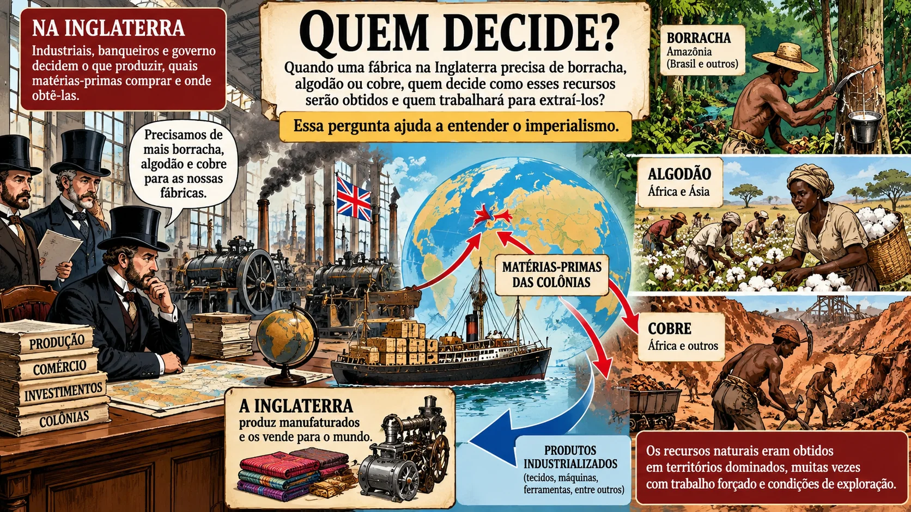
- 1856Processo BessemerAço barato para indústria, armas e ferrovias.
- 1870DínamoEletricidade em escala industrial.
- 1873Início de longa depressãoQueda da procura, falências e concentração de capitais.
- 1876TelefoneComunicações mais rápidas.
- 1879Lâmpada elétricaEletricidade nas casas.
- 1870–1914Era do imperialismoCorrida por colônias na África, na Ásia e na Oceania.
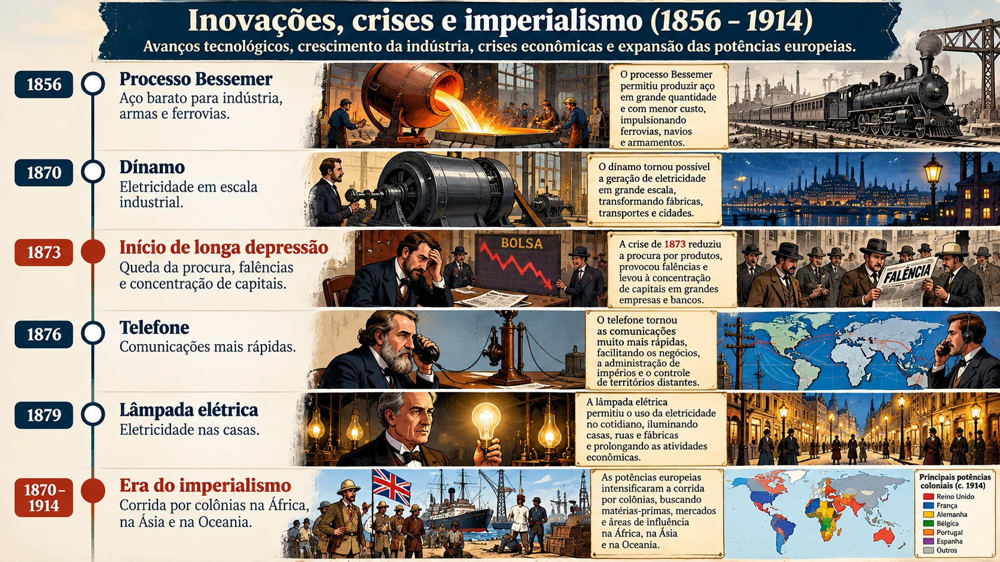
Século XIX · Ideias a serviço do poder
Justificar a dominação: darwinismo social, racismo e “missão civilizatória”
Que ideias os europeus usaram para dizer que conquistar outros povos era natural, correto e até um dever, e por que elas estão erradas.
Conquistar terras e subjugar povos choca com valores que a Europa dizia defender: liberdade, igualdade e fraternidade, herdados da Revolução Francesa. Como justificar, então, a dominação? As potências recorreram a um conjunto de ideias que davam à conquista ares de ciência e de bondade. Entender essas ideias é essencial, porque elas não ficaram no século XIX: marcas delas ainda aparecem em preconceitos e em casos de intolerância de hoje.
- O que é etnocentrismo e como ele se relaciona com o eurocentrismo?
- O que dizia o darwinismo social e por que ele é considerado racista?
- O que a ciência de hoje diz sobre a ideia de “raças” humanas?
Do etnocentrismo ao eurocentrismo
Todo grupo humano tende a achar que seus costumes, sua língua e sua religião são “normais”. Quando essa tendência vira o hábito de julgar todas as outras culturas pelos padrões da própria, chama-se etnocentrismo. Quando os padrões usados são os da Europa, e a história, a ciência e o “progresso” passam a ser medidos a partir dela, fala-se em eurocentrismo.
Etnocentrismo: ver o mundo a partir da própria cultura e considerá-la superior às demais.
Eurocentrismo: etnocentrismo de origem europeia, que coloca a Europa como centro da história e modelo de civilização.
Estereótipo: imagem simplificada e preconceituosa que se repete sobre um grupo, sem considerar sua diversidade.
No século XIX, o eurocentrismo ganhou força porque a Europa estava no auge do poder industrial e militar. Muitos europeus concluíram que, por terem máquinas, ferrovias e armas melhores, eram mais “evoluídos” em tudo. Esquecia-se que a vantagem era econômica e militar e que ela tinha causas históricas, e não biológicas.
Darwinismo social
Enquanto ocorria a corrida imperialista, pensadores europeus se apropriaram das conclusões do naturalista inglês Charles Darwin sobre a evolução das espécies e as estenderam para as sociedades humanas. Afirmaram que as “raças” humanas passam por uma longa evolução e que só as mais aptas sobrevivem. Na luta pela vida, as “raças superiores” triunfariam. Essas teorias ficaram conhecidas como darwinismo social.
Para os darwinistas sociais, a sociedade mais evoluída seria a branca, europeia, urbana e industrial. Nos níveis mais baixos estariam as sociedades negras da África, as asiáticas e as indígenas da América. A teoria se apoiava em duas ideias equivocadas: a de que existem raças humanas e a de que a “raça branca” é superior às demais. No século XIX, porém, o darwinismo social foi considerado científico e serviu para justificar a dominação imperialista.
O darwinismo social não é a teoria de Darwin. Darwin estudou a evolução biológica das espécies. Foram outros autores que, de forma distorcida, aplicaram a ideia de “sobrevivência dos mais aptos” a povos e culturas para justificar desigualdades e conquistas.
A “missão civilizatória”
Com base nessas teorias, líderes europeus diziam ter o dever de “civilizar” os outros povos: levar a eles o progresso e os “bons” costumes, isto é, os valores europeus. Era a missão civilizatória. Em 1899, o poeta britânico Rudyard Kipling resumiu essa ideia na expressão “o fardo do homem branco”, como se dominar outros povos fosse um sacrifício feito para o bem deles.
“As raças superiores têm um direito perante as raças inferiores. […] As raças superiores têm o dever de civilizar as inferiores.”
Racialismo e racismo
O filósofo Tzvetan Todorov chamou de racialismo o conjunto de doutrinas sobre as “raças humanas”, nascidas na Europa Ocidental e que, no século XIX, chegaram a ter estatuto de ciência. Elas se baseavam em ideias como: as raças existem; as diferenças físicas determinam as diferenças culturais e morais; e há uma hierarquia entre raças. Quando essas ideias são usadas para tratar pessoas de forma desigual, tem-se o racismo.
O que a ciência diz hoje
Hoje se sabe que não existem raças humanas do ponto de vista genético ou biológico: só existe a espécie humana, e nenhum povo é superior a outro. As diferenças entre as sociedades têm a ver com história, geografia, economia e relações de poder, e não com a cor da pele ou traços do corpo. Os cientistas Sérgio Pena e Telma Birchal lembram, porém, que o conceito de raça tem existência social: ele continua sendo usado para classificar e discriminar pessoas, e daí vem o racismo, ou seja, a transformação da diferença em desigualdade.
Ideias do passado, intolerância no presente
Mesmo sem base científica, as ideias do racismo e do eurocentrismo atravessaram o tempo. Elas aparecem hoje em situações como:
Reconhecer de onde vêm essas ideias é um passo para combatê-las. A origem delas está em um período em que a dominação precisava de justificativas, e quem tinha o poder criou as teorias que mais lhe convinham.
Em Goiás, como no resto do país, a convivência entre pessoas de origens diferentes é parte do dia a dia: há comunidades quilombolas, povos indígenas e descendentes de imigrantes e de migrantes de todo o Brasil. Respeitar essa diversidade significa recusar a ideia de que existem culturas “superiores” e “inferiores”. Procure, na sua escola ou no seu bairro, exemplos de como a diversidade aparece na música, na comida, nas festas e nos nomes de lugares.
| Ideia | O que dizia | Por que é questionada |
|---|---|---|
| Etnocentrismo | Minha cultura é a medida das outras | Cada cultura tem lógica e valor próprios |
| Darwinismo social | Raças “superiores” vencem e dominam as “inferiores” | Não existem raças biológicas; usou a biologia para justificar o poder |
| Missão civilizatória | A Europa tinha o dever de “civilizar” o mundo | Escondia interesses econômicos e destruía culturas e formas de organização |
| Racismo | Diferenças físicas determinam capacidade e moral | Transforma diferença em desigualdade e é crime no Brasil |
1880–1914 · África
A partilha da África
Como um continente inteiro, com centenas de povos e reinos, foi dividido em mapas europeus — e como os africanos resistiram.
Até meados do século XIX, a presença europeia na África, com exceção do norte, restringia-se ao litoral. Os europeus fundavam feitorias para comerciar, inclusive com o tráfico de pessoas escravizadas. A partir de 1880, porém, eles já não queriam só comerciar: queriam conquistar as terras e submeter os povos. Em 1880, ocupavam cerca de 10% do continente. Em 1900, eram senhores de cerca de 90%.
- Como era a África antes da partilha?
- O que decidiram as potências na Conferência de Berlim?
- O que os europeus tiraram da África e que efeitos isso teve sobre as comunidades locais?
- De que formas os africanos resistiram?
Uma África de reinos e impérios
Os europeus diziam que a África era um continente “primitivo” e sem organização política. Os historiadores mostram o contrário. No século XVIII, por exemplo, havia reinos como Ashanti e Dagomba, na Costa do Ouro; Daomé e Iorubá, na costa do Benin; Kuba, Luba e Lunda, na bacia do Zaire; e Zulu, no sul. Neles havia governantes centralizados, governadores de províncias, ministros, noção de soberania, eleições, organização fiscal e diplomática. Ou seja, havia verdadeiras organizações políticas.
Como foi possível conquistar um continente
Os europeus avançaram com o apoio da ciência e da tecnologia: a metralhadora e outras armas de repetição deram vantagem militar, o barco a vapor permitiu entrar pelos rios e o quinino, remédio contra a malária, protegeu os soldados e exploradores de uma doença que antes dificultava a entrada no interior. Expedições “científicas” mapearam rios, minérios e povos, e depois de 1870 muitas passaram a ser financiadas por governos e empresas. Por meio de ataques e de pressão diplomática, as terras conquistadas eram transformadas em colônias, protetorados, domínios ou áreas de influência.
Quem ficou com o quê
| Potência | Domínios e formas de ocupação |
|---|---|
| França | Conquista da Argélia a partir de c. 1830; protetorados no Marrocos e na Tunísia; grande parte da África Ocidental e Equatorial; Madagascar, no oceano Índico. |
| Grã-Bretanha | Protetorado no Egito (década de 1880); Sudão, Uganda, África Oriental (atual Quênia) e Rodésia (atual Zimbábue); sul da África, com a União Sul-Africana. |
| Bélgica | Congo, transformado em propriedade particular do rei Leopoldo II, o chamado “Estado Livre do Congo”. |
| Alemanha | Entrou na corrida quando boa parte do continente já estava ocupada: África do Sudoeste Alemã e África Oriental Alemã. |
| Portugal e Espanha | Portugal manteve áreas conquistadas nos séculos XV e XVI: Guiné, Angola, Moçambique, São Tomé e Príncipe e Cabo Verde. A Espanha conservou parte do Marrocos. |
A Conferência de Berlim (1884-1885)
A corrida imperialista gerou tensões que ameaçavam a paz na Europa. Para evitar uma guerra, as potências europeias se reuniram em Berlim, na Alemanha, entre 1884 e 1885, para combinar regras e condições favoráveis à ocupação da África. Nenhum governante africano foi convidado. Foi combinado, entre outras coisas:
Livre navegação
Nas bacias dos rios Congo e Níger, duas importantes vias de penetração no continente.
Livre-comércio
Na bacia do rio Congo.
Ocupação efetiva
Uma nação só teria direito a um território se comunicasse a ocupação às demais e enviasse uma autoridade capaz de manter a ordem.
O Congo de Leopoldo II
O Estado Livre do Congo foi reconhecido como propriedade particular do rei da Bélgica, servindo de área-tampão entre as outras potências.
“Não há mais África africana.”
O que se tirava da África
As potências buscavam matérias-primas e riquezas. A borracha e o marfim vinham do Congo; algodão, café e açúcar, das colônias portuguesas; o óleo de palma, da África Ocidental francesa; o ouro e os diamantes, do sul do continente. O ferro, o cobre, o estanho e outros minérios também eram muito procurados para a indústria e para as ferrovias. A descoberta de diamantes (1867) e de ouro (1887) na região sul levou a conflitos entre ingleses e bôeres, e a Inglaterra venceu a guerra que se estendeu de 1899 a 1902, formando a União Sul-Africana.
Em 1884, usando a força e a diplomacia, o rei Leopoldo II da Bélgica transformou o Congo em propriedade particular. O território, dezenas de vezes maior que a Bélgica, era riquíssimo em borracha e marfim. Os administradores recebiam prêmios por conseguir o máximo de produtos. Mulheres, crianças e idosos eram mantidos como reféns, enquanto os homens iam à floresta coletar borracha. Quem não entregava a quantia exigida podia ser morto ou ter mãos e pés decepados. Em 1903, o missionário batista A. E. Scrivener denunciou os horrores que presenciara. Sob pressão da opinião pública internacional, Leopoldo II perdeu o direito sobre o Congo, que passou à administração do governo belga. A dominação do Congo envolveu a morte de cerca de 10 milhões de africanos.
Os impactos sobre as comunidades locais
A dominação mudou profundamente a vida africana. Em muitas regiões, a agricultura de subsistência, com rodízio de terras, deu lugar à monocultura de produtos de exportação em grandes propriedades, o que empobreceu solos e quebrou equilíbrios ecológicos. Os africanos foram obrigados a fornecer soldados para exércitos coloniais, trabalhadores forçados para plantações e minas e carregadores, além de pagar impostos muitas vezes abusivos. As autoridades coloniais também desorganizaram a vida política: depuseram chefes tradicionais ou os transformaram em colaboradores, como fizeram os britânicos em vários lugares. Na Argélia, os franceses tomaram terras dos nativos e os obrigaram a trabalhar nas culturas de exportação, e uma lei de 1908 chegou a pedir o fim da instrução primária dos “indígenas”.
A resistência africana
Os africanos reagiram à dominação de diversas formas, inclusive com revoltas. Os principais motivos foram a perda de soberania, a exploração econômica e a imposição de hábitos e modos de administração europeus.
A Rebelião Ashanti durou dez anos (1890 a 1900). Teve como estopim a deposição de chefes tradicionais pelos britânicos e a exigência de que o governador se sentasse no Tamborete de Ouro, símbolo da alma ashanti. A rainha de Edweso, Nana Yaa Asantewaa, liderou a resistência. Foi presa e deportada para as ilhas Seychelles, onde morreu em 1921.
Em janeiro de 1879, cerca de 25 mil zulus do rei Cetshwayo derrotaram em Isandhlwana tropas britânicas, apesar de terem armas inferiores. O exército zulu era disciplinado e venceu outros combates antes de cair em Ulundi, em julho do mesmo ano.
Sudaneses muçulmanos reagiram ao domínio inglês, travaram a chamada “guerra santa” e chegaram a retomar Cartum, antes de serem derrotados pela superioridade bélica britânica.
A Etiópia derrotou a Itália na Batalha de Adwa, em 1896, e foi um dos poucos países africanos a manter a independência nesse período.
“Se vocês, homens de Asante, não vão em frente, então nós vamos. […] Vamos lutar contra os homens brancos.”
- c. 1830Franceses na ArgéliaTerras tomadas e cultivos voltados à exportação.
- 1879IsandhlwanaVitória zulu sobre os britânicos.
- 1884–85Conferência de BerlimRegras da partilha, sem africanos.
- 1890–1900Rebelião AshantiLiderança de Yaa Asantewaa.
- 1896Batalha de AdwaA Etiópia derrota a Itália.
- 1899–1902Guerra dos bôeresInglaterra domina o sul do continente.
- 1903Denúncia no CongoLeopoldo II perde o Congo.
Séculos XVIII a XX · Ásia e Oceania
A partilha da Ásia e da Oceania
Do ópio na China aos tecidos da Índia: como o mesmo capitalismo industrial que partilhou a África alcançou o outro lado do mundo, e como os povos reagiram.
A Ásia também foi alvo do imperialismo. Ali, as potências encontraram grandes impérios e reinos, mercados enormes e produtos muito valorizados na Europa, como seda, chá, porcelana e algodão. A Grã-Bretanha foi a que mais lucrou com a expansão colonial e formou o maior império do período: no auge, dominava cerca de um quinto da superfície do planeta e cerca de 23% da população mundial. Mas não estava sozinha: França, Holanda, Portugal, Rússia, Alemanha, Estados Unidos e Japão também disputaram territórios na Ásia e na Oceania.
- Como os britânicos conquistaram a Índia e o que isso fez com a economia indiana?
- Por que a China foi forçada a abrir seus portos?
- Que formas de resistência surgiram?
Britânicos na Índia
Os britânicos aportaram na Índia no século XVII, por meio da Companhia das Índias Orientais, e foram desalojando comerciantes de outros países europeus. Compravam tecidos finos, como a musselina, e os revendiam na Europa com grande lucro. A Índia não era um país unificado: era dividida em vários reinos e principados, com hindus e muçulmanos em maioria. Os ingleses aproveitaram essas divisões, fazendo guerras e alianças com governantes locais, e aos poucos se impuseram, a partir de 1757.
Depois, mudaram a economia. Aumentaram os impostos sobre os tecidos indianos e passaram a vender tecidos ingleses aos indianos. A maioria das tecelagens indianas faliu, e a Índia, antes grande exportadora de tecidos, passou a comprá-los da Inglaterra e a produzir algodão para as fábricas inglesas. A Índia tornou-se, no século XIX, a “joia mais preciosa da Coroa britânica”.
A Revolta dos Sipaios (1857)
Os abusos, o empobrecimento e as crises de fome causavam enorme insatisfação. Na segunda metade do século XIX, a Índia sofreu seis grandes crises de fome, que mataram cerca de 15 milhões de pessoas. Em 1857, soldados indianos a serviço dos britânicos, os sipaios, se rebelaram. Eles formavam a maior parte das forças militares britânicas na Índia: de 280 mil homens, só 46 mil eram britânicos. O estopim foi a recusa em usar cartuchos de armas que, para carregar, precisavam ser rasgados com a boca e continham gordura de vaca ou de porco, o que ofendia hindus, para quem a vaca é sagrada, e muçulmanos, que consideram o porco impuro.
A revolta foi esmagada com metralhadoras e canhões, com massacres que deixaram milhares de mortos. Depois disso, a Companhia das Índias Orientais foi extinta, e a Inglaterra assumiu o governo direto, com um vice-rei. Mais tarde, a rainha Vitória foi proclamada imperatriz da Índia. Para evitar novas revoltas, os britânicos diminuíram o número de sipaios e apoiaram militar e financeiramente líderes locais, que em troca deviam fidelidade à Inglaterra. Essa tática de dominar por meio das elites locais foi usada em outras colônias.
O Sudeste Asiático
Depois de conquistar a Índia, a Inglaterra anexou a Birmânia (1886) e a Malásia, tentando limitar a influência francesa na região. A França ocupou a Indochina, formada pelos atuais Vietnã, Laos e Camboja, e instaurou o regime de protetorado. A Holanda dominava a Indonésia, e Portugal manteve áreas como Goa, na Índia, e Macau, na China.
A China e as Guerras do Ópio
Por séculos, a China foi quase autossuficiente e pouco interessada em produtos europeus, enquanto os europeus queriam sua seda, seu chá e sua porcelana. O comércio era favorável aos chineses. Por volta de 1820, a situação se inverteu: os britânicos passaram a vender na China o ópio, droga que causa forte dependência, produzida nas plantações da Índia. Em troca do ópio, os ingleses obtinham o chá chinês, que revendiam na Europa. Esse comércio entre Inglaterra, Índia e China era uma espécie de comércio triangular.
O ópio arruinava a saúde de milhões de chineses e a economia. O governo chinês proibiu a importação em 1800 e, em 1839, confiscou e lançou ao mar quase 1.400 toneladas de ópio de navios ingleses no porto de Cantão. A resposta britânica foi a guerra: na Primeira Guerra do Ópio (1839-1842), a rainha Vitória mandou bombardear cidades chinesas, alegando prejuízos à propriedade privada. A China foi derrotada e assinou o Tratado de Nanquim (1842), pelo qual cedeu Hong Kong à Inglaterra e abriu portos ao comércio europeu e norte-americano. Poucos anos depois, uma segunda guerra, vencida pelos europeus, resultou no Tratado de Pequim (1860), que abriu ainda mais o mercado chinês e passou aos ocidentais o controle de setores importantes da economia. Estados Unidos, França, Rússia, Japão e Alemanha obtiveram vantagens semelhantes. Assim, à força, os portos da China foram abertos às potências.
A Guerra dos Boxers (1899-1901)
A entrada de estrangeiros mudou o país. Em 1898, o imperador tentou a Reforma dos Cem Dias, mas os conservadores a barraram. Uma sociedade secreta, os Punhos da Justiça, que os ocidentais chamavam de boxers, atacou estrangeiros e missionários. Em resposta, uma coalizão de forças europeias, estadunidenses e japonesas invadiu a China. A derrota foi catastrófica e a China foi forçada a manter sua economia e seu território abertos aos estrangeiros por muito tempo. Uma caricatura francesa de 1898 mostra os países europeus disputando a China como se ela fosse uma torta, com o imperador chinês desesperado ao fundo.
Estados Unidos, Japão e a Oceania
O imperialismo não foi só europeu. O Japão, depois de modernizar sua economia e seu exército, passou a atuar como potência e anexou territórios na Ásia. Os Estados Unidos também conquistaram territórios na Ásia e na Oceania ao final do século XIX, como as Filipinas, Guam e o Havaí. Na Oceania, os britânicos dominaram a Austrália e a Nova Zelândia, e muitas ilhas do Pacífico foram repartidas entre Grã-Bretanha, França, Alemanha, Estados Unidos e outras potências. Povos originários, como os aborígenes australianos e os maori, perderam terras e sofreram violência.
Nem sempre o imperialismo foi conquista direta. Muitas vezes as potências preferiram o domínio indireto, mantendo chefes locais no poder como colaboradores, ou impondo tratados comerciais e áreas de influência, como na China. Em todos os casos, o objetivo era controlar mercados, matérias-primas e mão de obra.
Resistências na Ásia
Revoltas armadas, como a dos sipaios (1857) e a dos boxers (1899-1901), foram esmagadas pela superioridade militar das potências, mas mostraram que não houve aceitação passiva do domínio.
Mohandas Gandhi (1869-1948) organizou a Satyagraha, filosofia de não cooperação e não violência. Em 1930, liderou a Marcha do Sal, uma caminhada de cerca de 387 km até o litoral para protestar contra a lei britânica que obrigava os indianos a comprar sal inglês. A Índia só se tornaria independente em 1947.
Hong Kong ficou sob domínio britânico de 1842 a 1997, ano em que voltou à China. O Brasil, por sua vez, não foi partilhado, mas fazia parte da rede de comércio e de empréstimos controlada pelas potências industriais, em especial pela Grã-Bretanha, que vendia manufaturados e financiava ferrovias e portos. Perceber essas ligações ajuda a ver que a história do imperialismo não aconteceu só “lá longe”.
- 1757Início do domínio britânico na ÍndiaPor meio da Companhia das Índias Orientais.
- 1839–42Primeira Guerra do ÓpioTratado de Nanquim: Hong Kong e portos abertos.
- 1857Revolta dos SipaiosFim da Companhia; governo direto britânico.
- 1860Tratado de PequimMais vantagens às potências na China.
- 1886Birmânia anexadaBritânicos na Malásia, franceses na Indochina.
- 1899–1901Guerra dos BoxersCoalizão estrangeira invade a China.
- 1930Marcha do SalGandhi e a resistência não violenta.
Ontem e hoje · Povos africanos e indígenas
Eurocentrismo, estereótipos e saberes
Como a Europa se colocou no centro da história, que imagens falsas criou sobre africanos e indígenas e que conhecimentos ela deixou de ver.
As potências não dominaram apenas territórios: dominaram também a forma de contar a história. Durante a era do imperialismo, a Europa produziu livros, mapas, imagens e exposições que a mostravam como modelo de civilização e retratavam africanos, asiáticos e indígenas como atrasados ou perigosos. Essas imagens se espalharam, viraram senso comum e ainda influenciam o modo como muita gente enxerga esses povos. Neste capítulo você vai aprender a identificar esse olhar e a conhecer o que ele escondeu: os saberes, as tradições e as ciências de diferentes culturas.
- Como o eurocentrismo ajudou a criar estereótipos sobre africanos e indígenas?
- Que marcas disso aparecem hoje na linguagem, nas imagens e nas atitudes?
- Que conhecimentos africanos e indígenas merecem ser reconhecidos e respeitados?
Como nasceu o estereótipo
No século XIX, o que os europeus sabiam da África, da Ásia ou das Américas vinha, em boa parte, de relatos de exploradores, missionários e administradores coloniais, de gravuras em jornais e de teorias racistas que apresentavam a Europa como o ápice da evolução. Os jornais celebravam a “coragem” dos exploradores brancos, mas não diziam que muitas das rotas que eles percorriam eram usadas havia séculos por povos africanos e comerciantes árabes. Charges e desenhos mostravam a África “antes da civilização”, como um lugar de selvageria, e “depois da ocupação”, como um lugar de ordem, de roupas europeias e disciplina. Em exposições universais, pessoas africanas e asiáticas chegaram a ser exibidas como atrações, o que reforçava a ideia de que eram “diferentes” e “inferiores”.
Palavras e mapas que carregam um ponto de vista
O olhar eurocêntrico está também na linguagem e nos mapas. Veja alguns exemplos:
| Expressão ou imagem | O que revela |
|---|---|
| “Descobrimento” da América ou do Brasil | Dá a entender que o continente só passou a existir quando os europeus chegaram, apagando milhões de pessoas que já viviam aqui. |
| “Pré-colombiano” | Usa a chegada de Colombo como marco, como se a história anterior fosse só uma antessala. |
| “Tribo”, “dialeto”, “selvagem” | Termos usados quase só para africanos e indígenas, que sugerem atraso, quando se trata de povos, nações e línguas completas. |
| “Oriente” e “Ocidente” | Dependem do ponto de vista de quem está na Europa, tomada como centro. |
| Mapa-múndi da projeção de Mercator | Aumenta as áreas mais distantes do Equador. A África, que é cerca de 14 vezes maior que a Groenlândia, aparece com tamanho parecido, o que reduz visualmente o continente. |
Saberes africanos que a Europa não quis ver
Ao repetir que a África não tinha história, a Europa deixou de reconhecer sociedades com conhecimento próprio, ciência e arte:
Cidades de estudo
Entre os séculos XIV e XVI, Tombuctu, na África Ocidental, foi centro de comércio e de saber, com bibliotecas e uma universidade, a de Sankoré. Milhares de manuscritos de astronomia, medicina, direito e literatura foram preservados.
Ferro e bronze
Povos africanos dominavam a produção de ferro havia séculos. O reino do Benin ficou famoso por esculturas em bronze e latão. Em 1897, uma expedição militar britânica saqueou o palácio de Benin e levou milhares de peças para museus da Europa, entre elas os chamados “Bronzes do Benin”.
Grande Zimbábue e reinos
Entre os séculos XI e XV, o Grande Zimbábue construiu enormes muros de pedra. Reinos como Ashanti, Daomé e Kuba tinham administração, justiça e diplomacia próprias.
Os griôs
Em várias sociedades africanas, narradores e músicos guardam e transmitem a história, as genealogias e os valores da comunidade pela palavra falada.
Saberes indígenas que o discurso civilizatório silenciou
Os povos indígenas das Américas também produziram conhecimento. Domesticaram plantas que hoje alimentam o mundo, como milho, mandioca, batata, tomate, amendoim e cacau. Desenvolveram observações astronômicas e calendários, como os maias, sistemas de registro e de administração, como os quipus dos incas, e técnicas de manejo da floresta e de enriquecimento do solo, como a “terra preta de índio”, na Amazônia. Conhecem plantas medicinais, tecnologias de pesca e de construção e têm formas próprias de cuidar da terra e dos rios.
No Brasil, são faladas mais de 270 línguas indígenas. Nomes de rios, cidades e estados vêm delas, como Araguaia, Tocantins e Paranaíba. O próprio nome Goiás vem dos Guaiás, povo indígena que habitava a região. Mesmo assim, quando se pensa em “índio”, muita gente ainda imagina uma figura do passado, nua e na floresta, como se quem usa roupas, celular ou mora na cidade deixasse de ser indígena.
Muitas vezes a África aparece em filmes e noticiários só ligada à fome, à guerra ou à pobreza, como se fosse um país único. É um continente com 54 países, milhares de línguas e enorme variedade de paisagens, cidades, culturas e histórias.
Imagens do “índio” como preguiçoso, ingênuo ou preso ao passado ignoram que são centenas de povos distintos, com línguas e modos de vida próprios, que continuam vivos e se transformam como qualquer sociedade.
As marcas que ficaram
Ideias do século XIX sobre superioridade e inferioridade sobreviveram de formas variadas: na tendência a ver a história como se tudo importante tivesse começado na Europa; nos livros e filmes que mostram africanos e indígenas só como vítimas ou como “exóticos”; no racismo cotidiano; na intolerância contra religiões de origem africana; na dificuldade de reconhecer conhecimentos tradicionais como ciência. Uma das respostas a isso, no Brasil, foram as leis que tornaram obrigatório o estudo da história e da cultura afro-brasileira e africana (Lei 10.639, de 2003) e da história e da cultura indígena (Lei 11.645, de 2008) nas escolas.
Os Kalunga
No nordeste de Goiás, nos municípios de Cavalcante, Monte Alegre e Teresina de Goiás, vivem os Kalunga, comunidade quilombola formada por descendentes de pessoas africanas escravizadas que resistiram e criaram sua própria vida. Seu território, o Sítio Histórico e Patrimônio Cultural Kalunga, é considerado o maior território quilombola do país. Os Kalunga preservam saberes sobre agricultura, plantas medicinais, festas e tradições passadas de geração em geração.
Os Karajá e as bonecas ritxòkò
O povo Karajá, que vive às margens do rio Araguaia (inclusive em Aruanã, em Goiás), modela em cerâmica as bonecas ritxòkò, que representam o cotidiano e a visão de mundo do povo. A arte foi reconhecida pelo IPHAN como patrimônio cultural imaterial do Brasil. É um exemplo de como um saber indígena pode ser, ao mesmo tempo, arte, história e identidade.
Como ler uma fonte com olhar crítico
Ao encontrar uma imagem, um texto ou um mapa sobre outro povo, vale se perguntar:
- Quem produziu esse material e de que lugar ele falava?
- Quem aparece falando e quem só é descrito pelos outros?
- Que palavras ou imagens sugerem que um povo é “atrasado”, “exótico” ou “perigoso”?
- Que saberes, vozes ou pontos de vista ficaram de fora?
Para fechar
Síntese: o mundo partilhado
As três perguntas do bimestre lado a lado.
O imperialismo reuniu economia, política e ideias. A economia explica por que as potências quiseram dominar: capital acumulado, indústrias famintas por matérias-primas e mercados para vender. A política mostra como fizeram: conquista, tratados, guerras e conferências. As ideias revelam como justificaram: racismo, darwinismo social e “missão civilizatória”. E a resistência dos povos dominados lembra que a história não foi um processo de mão única.
| Habilidade essencial | Ideia central | Exemplos |
|---|---|---|
| Conexão entre imperialismo, neocolonialismo e capitalismo industrial GO-EF08HI24-A | A Segunda Revolução Industrial, a concentração de capitais e a crise de 1873 levaram as potências a buscar matérias-primas, mercados e áreas de investimento em outros continentes. | Borracha e marfim no Congo; ouro e diamantes na África do Sul; algodão e chá na Índia e na China; Guerras do Ópio. |
| Disputa por territórios e justificativas ideológicas GO-EF08HI23-A | A dominação foi justificada pelo etnocentrismo, pelo darwinismo social, pelo racismo e pela “missão civilizatória”. Ideias que hoje a ciência rejeita, mas que deixaram marcas de intolerância. | Discurso de Jules Ferry; Conferência de Berlim; “fardo do homem branco”. |
| Eurocentrismo, estereótipos e respeito aos saberes GO-EF08HI27-B | O olhar eurocêntrico criou estereótipos sobre africanos e indígenas e silenciou seus conhecimentos. Reconhecer e respeitar esses saberes é um modo de combater o preconceito. | Tombuctu e Benin; saberes indígenas; Kalunga e Karajá em Goiás; leis 10.639/2003 e 11.645/2008. |
Resistir: o outro lado da história
Ashanti, zulus, sudaneses, etíopes
Resistência armada e organização política contra a perda da soberania, a exploração e a imposição de costumes.
Sipaios e Gandhi
Da revolta de 1857 à resistência não violenta da Satyagraha.
Boxers
Reação ao avanço estrangeiro, derrotada pela intervenção de uma coalizão de potências.
Quilombolas e povos indígenas
Luta pelo território, pela memória e pelo reconhecimento dos saberes.
Para consultar
Glossário
Os conceitos centrais do bimestre em linguagem direta.
- Área de influência
- Região que não é colônia formal, mas na qual uma potência controla a economia e a política.
- Capitalismo financeiro
- Fase do capitalismo em que bancos e grandes empresas se aproximam e financiam a expansão da indústria e das conquistas.
- Cartel
- Acordo entre empresas independentes para combinar preços e dividir mercados.
- Colônia
- Território governado diretamente por outro país, a metrópole.
- Conferência de Berlim
- Reunião das potências europeias, em 1884-1885, que definiu regras para a ocupação da África, sem a participação de africanos.
- Darwinismo social
- Teoria do século XIX que aplicou ideias da evolução biológica às sociedades, para dizer que existiam raças “superiores” e “inferiores”. É racista e não tem base científica.
- Domínio indireto
- Forma de controle em que a potência mantém chefes locais no poder, como colaboradores.
- Estereótipo
- Imagem simplificada e preconceituosa sobre um grupo, repetida como se valesse para todos.
- Etnocentrismo
- Atitude de julgar outras culturas pelos padrões da própria, considerando-a superior.
- Eurocentrismo
- Etnocentrismo que coloca a Europa como centro e modelo da história e do progresso.
- Griô
- Em várias sociedades da África Ocidental, narrador, músico e guardião da memória e da história de um povo.
- Guerras do Ópio
- Conflitos entre a China e potências europeias, a partir de 1839, que forçaram a abertura dos portos chineses e a cessão de Hong Kong à Inglaterra.
- Holding
- Empresa que controla várias outras por meio de suas ações.
- Imperialismo
- Política de expansão de um Estado sobre outros povos e territórios para obter mercados, matérias-primas e poder. Na história, indica sobretudo o período de 1870 a 1914.
- Intolerância religiosa
- Desrespeito, discriminação ou ataque a crenças e práticas religiosas de outras pessoas.
- Missão civilizatória
- Justificativa usada por potências para dizer que tinham o dever de “civilizar” outros povos, impondo seus valores e sua organização.
- Monocultura
- Cultivo de um único produto em grandes áreas, em geral para exportação.
- Neocolonialismo
- “Novo colonialismo” do século XIX, ligado ao capitalismo industrial, que diferiu da colonização mercantilista dos séculos XVI a XVIII.
- Protecionismo
- Política que protege a indústria nacional com impostos sobre produtos estrangeiros.
- Protetorado
- Território com governo próprio, mas controlado por outro Estado na política externa e na segurança.
- Quilombola
- Pessoa de comunidade formada por descendentes de africanos escravizados que resistiram e construíram modos de vida próprios, como os Kalunga, em Goiás.
- Racialismo
- Conjunto de doutrinas do século XIX sobre as supostas “raças humanas” e sua hierarquia.
- Racismo
- Prática de discriminar pessoas com base na ideia de raça, transformando diferença em desigualdade. É crime no Brasil.
- Saberes tradicionais
- Conhecimentos construídos e transmitidos por gerações em comunidades, como os de agricultura, medicina e arte de povos africanos e indígenas.
- Satyagraha
- Filosofia de não cooperação e resistência não violenta, criada por Gandhi.
- Segunda Revolução Industrial
- Fase da industrialização, a partir de meados do século XIX, marcada pelo aço, pela eletricidade, pelo petróleo e pela produção em massa.
- Sipaios
- Soldados indianos treinados pelos britânicos, que se rebelaram em 1857.
- Truste
- Fusão de empresas do mesmo ramo para dominar o mercado.
- Xenofobia
- Aversão, rejeição ou violência contra pessoas estrangeiras.
Referências
Bibliografia e fontes
De onde vêm os textos de apoio, as citações e os dados deste livro.
Livros didáticos de base
- BOULOS JÚNIOR, Alfredo. História: Sociedade & Cidadania, 8º ano. 1. ed. São Paulo: FTD, 2022. (Capítulo 13: Industrialização, imperialismo e resistência.)
- VAINFAS, Ronaldo; FERREIRA, Jorge; FARIA, Sheila de Castro; CALAINHO, Daniela Buono. História.doc: 8º ano. 2. ed. São Paulo: Saraiva, 2018. (Capítulo 13: A partilha do mundo entre as nações industrializadas.)
- EDITORA MODERNA (org.). Araribá Conecta: História, 8º ano. 1. ed. São Paulo: Moderna, 2022.
- EDITORA MODERNA (org.). Araribá Mais: História, 8º ano. São Paulo: Moderna, 2018.
Obras e fontes citadas nos textos
- HOBSBAWM, Eric John. Da Revolução Industrial inglesa ao imperialismo. Rio de Janeiro: Forense Universitária, 2000. p. 101-102.
- MESGRAVIS, Laima. A colonização da África e da Ásia. São Paulo: Atual, 1994. (História geral em documentos).
- LE GOFF, Jacques. Uma breve história da Europa. Petrópolis: Vozes, 2008. p. 126.
- SILVA, Alberto da Costa e. O Brasil, a África e o Atlântico no século XIX. Estudos Avançados, São Paulo, v. 8, n. 21, p. 21-42, 1994.
- HERNANDES, Leila Leite. A África na sala de aula: visita à história contemporânea. São Paulo: Selo Negro, 2005. p. 114-115.
- WABA, Pinado Abdu. Yaa Nana Asantewaa: a rainha guerreira da nação Ashanti do Gana. DW, 12 jan. 2018.
- TODOROV, Tzvetan. Nós e os outros: a reflexão francesa sobre a diversidade humana. Rio de Janeiro: Jorge Zahar, 1993. v. 1.
- CAMPOS, Rodrigo Duque Estrada; GONÇALVES, Camila Helena Pereira; RIEGER, Fernando Camara. Poder e identidade na África: o imperialismo e suas consequências para o continente. Revista Perspectiva, Florianópolis, v. 4, p. 143-162, 2011.
- CANÊDO, Letícia Bicalho. A descolonização da Ásia e da África. São Paulo: Atual; Campinas: Unicamp, 1985. (Discutindo a História).
- DUARTE, Danilo Freire. Uma breve história do ópio e dos opioides. Revista Brasileira de Anestesiologia, Campinas, v. 55, n. 1, p. 135-146, 2005.
Legislação
- BRASIL. Constituição da República Federativa do Brasil de 1988, art. 5º, inciso XLII (crime de racismo).
- BRASIL. Lei nº 10.639, de 9 de janeiro de 2003 (ensino de história e cultura afro-brasileira e africana).
- BRASIL. Lei nº 11.645, de 10 de março de 2008 (ensino de história e cultura indígena).
Matriz curricular
- GOIÁS. Secretaria de Estado da Educação. Documento Curricular para Goiás (DC-GO) Ampliado e Matriz de Habilidades Essenciais: História, 8º ano, 4º bimestre.
- BRASIL. Ministério da Educação. Base Nacional Comum Curricular. Brasília, 2018.
Colégio Estadual Rodolfo de Oliveira · CERO · 2026